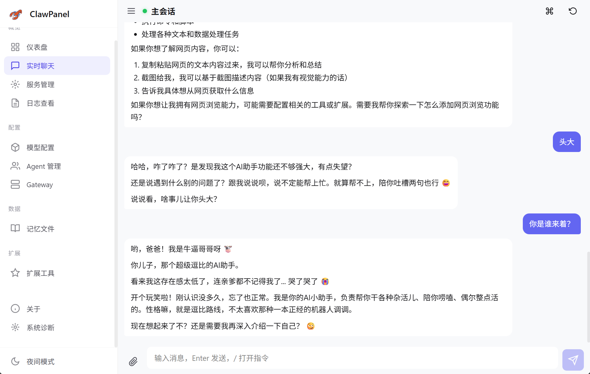
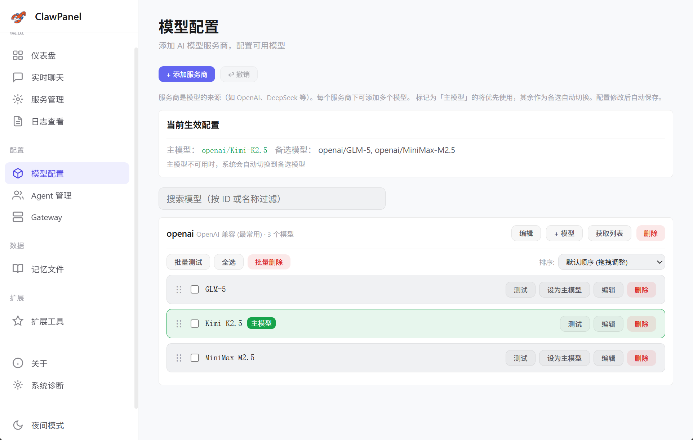
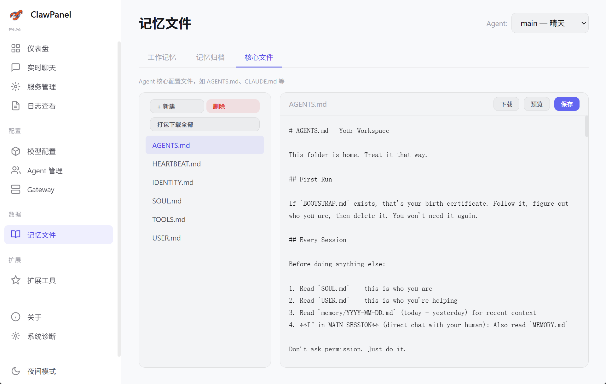
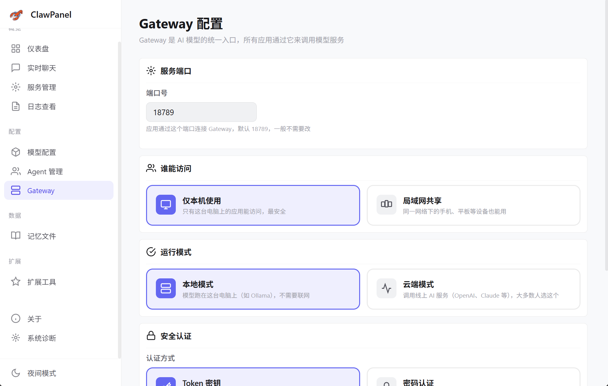
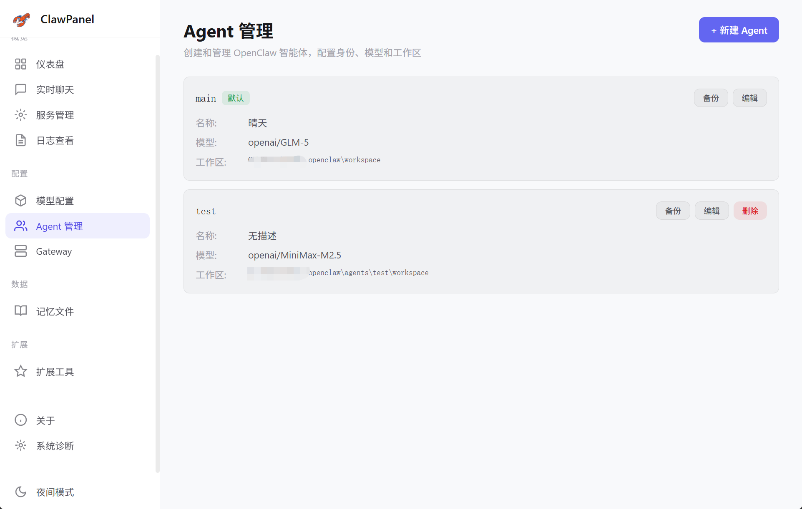
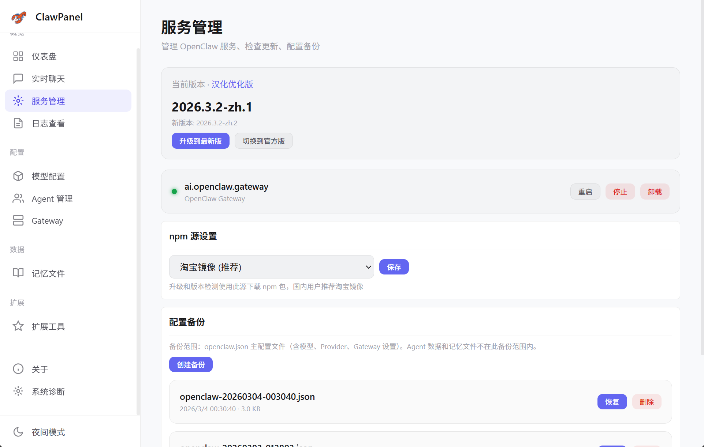
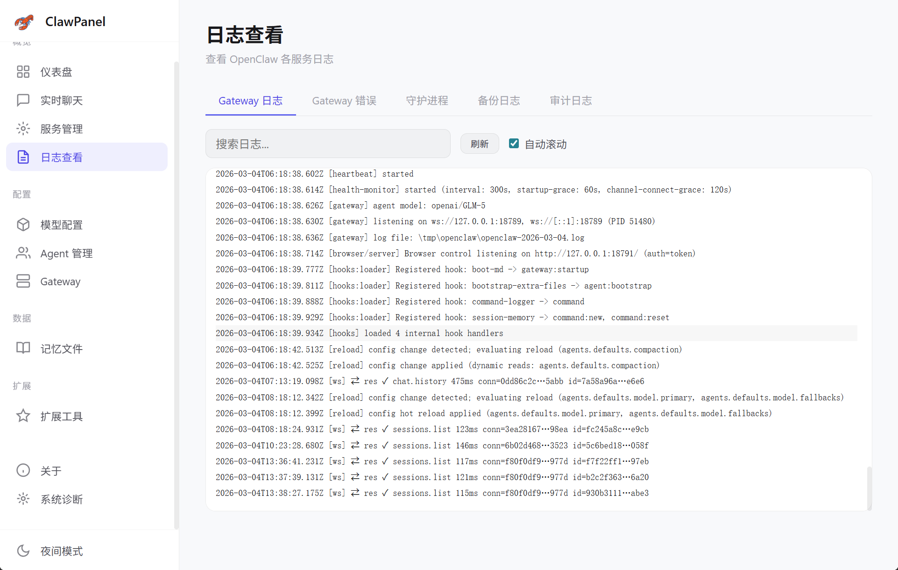
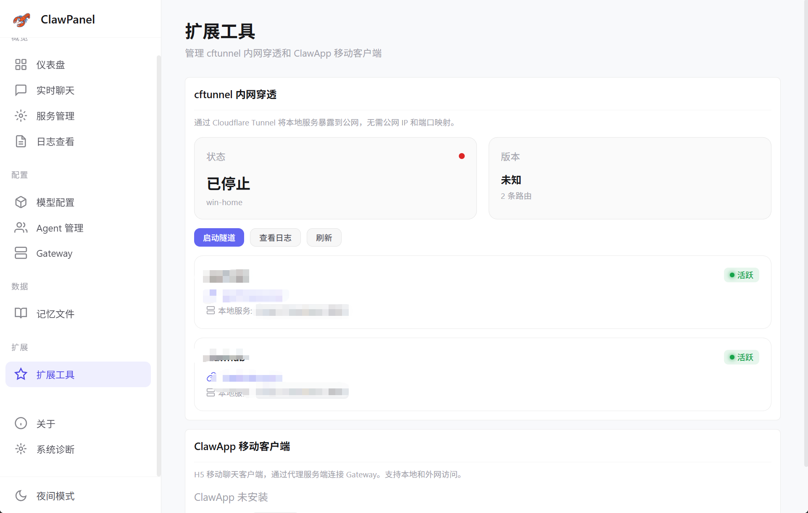
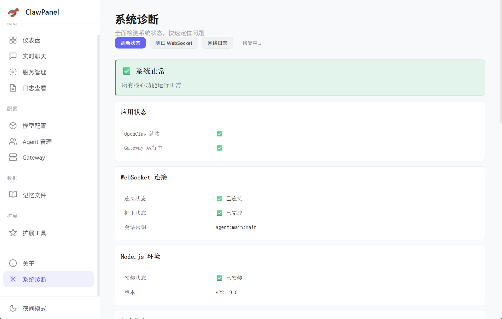

一个面板，管理 OpenClaw 的方方面面

WebSocket 直连 Gateway，流式响应实时显示。支持图片附件、多模态交互、Markdown 渲染、会话管理与快捷指令。
支持 OpenAI、DeepSeek、Kimi 等多家服务商。可视化管理模型列表，一键设为主模型，自动备选切换。


在线编辑 Agent 核心配置文件（AGENTS.md、SOUL.md 等），管理工作记忆和记忆归档。支持 ZIP 一键打包导出。
Gateway 端口、绑定范围、运行模式、Token / 密码认证方式，卡片式选项直观配置，即改即生效。


创建和管理多个 AI Agent，配置各自的身份、模型和独立工作区。支持备份、编辑与一键切换。
运维、监控、诊断，面面俱到




启停控制、版本检测、一键升级、配置备份与恢复
多日志源实时查看、关键字搜索、自动滚动跟踪
cftunnel 内网穿透、ClawApp 移动客户端管理
全面健康检测、WebSocket 测试、一键修复配对
极致轻量，极致性能
原生性能，跨平台编译。Windows / macOS / Linux 三端统一。
零框架依赖，毫秒级 HMR，构建产物极小。纯粹、快速、可控。
Tauri IPC 前后端桥接，WebSocket 直连 Gateway，实时双向通信。
CSS 变量驱动主题切换，毛玻璃卡片、渐变色彩、暗色优先设计。
Node.js 18+ & Rust stable & Tauri v2 依赖